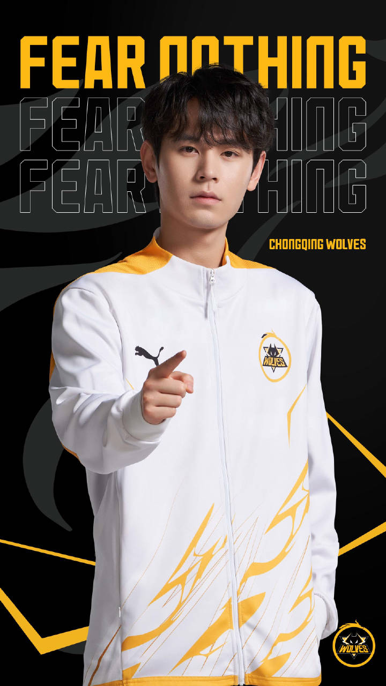
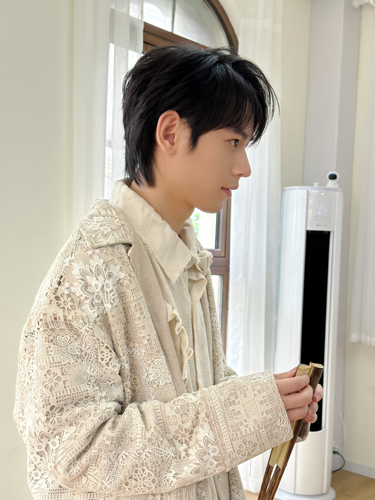
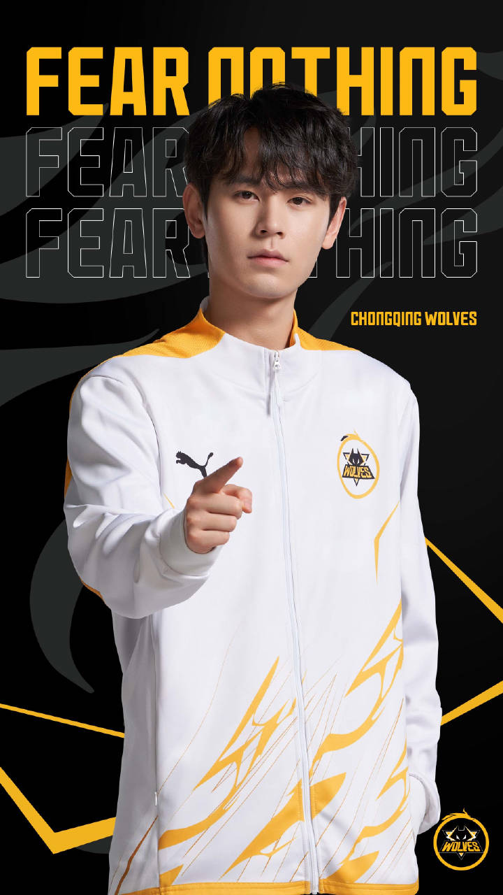
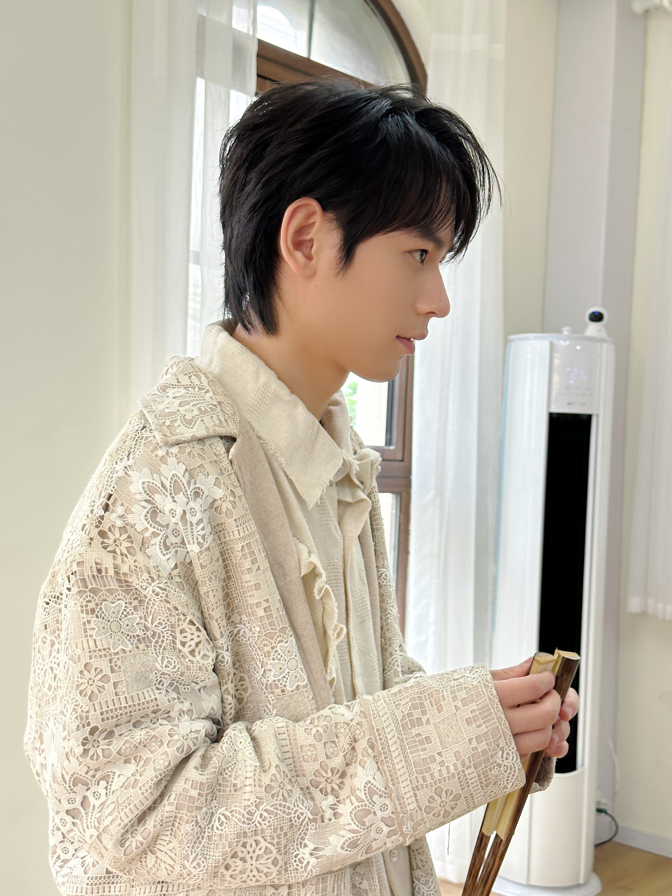

2001年9月11日出生於中國福建莆田
2018年加入崑山KSSC俱樂部，開啟電競選手職業生涯,遊戲ID為"阿七"，位置為對抗路，次年上旬，遊戲ID改為"無畏"
2020年加入GOG戰隊，改遊戲ID為"Nofear"，轉位為打野。後再KPLGT春季賽總決賽讓三追四獲得勝利，同時為FMVP
同年正式加入南京Hero久竟，擔任首發打野，並將遊戲ID改回"無畏"
於2020年冬決及2021年春決拿得打野位冠軍
2023年轉為輔助位後轉會至北京JDG，並參加KPL DREAM TEAM於利雅德比賽奪得輔助位冠軍